INGEGNERIA, VIAGGI E LIBERTÀ:
LA MECCANICA DELLE COSE
Candidatura ufficiale per la partecipazione al progetto educational "Fisica in Moto" presso il Ducati Summer Campus.
Esplora il profiloIL MIO PROFILO
L'EREDITÀ CHE MI È STATA DATA
Sono Aurora Marinoni, studentessa del Liceo Scientifico “Edoardo Amaldi” di Bergamo. Fin dall’inizio del mio percorso scolastico ho avuto una profonda passione per la matematica in ogni sua forma: sia per la pura soddisfazione personale nel decifrare i ragionamenti logici sia per un legame affettivo ed emotivo trasmessomi da mio nonno.
Per me la matematica, la logica e la spiegazione scientifica non sono solo strumenti per comprendere il mondo che mi circonda, ma rappresentano un filo conduttore che mi permette di portare sempre con me le mie radici e la mia famiglia.
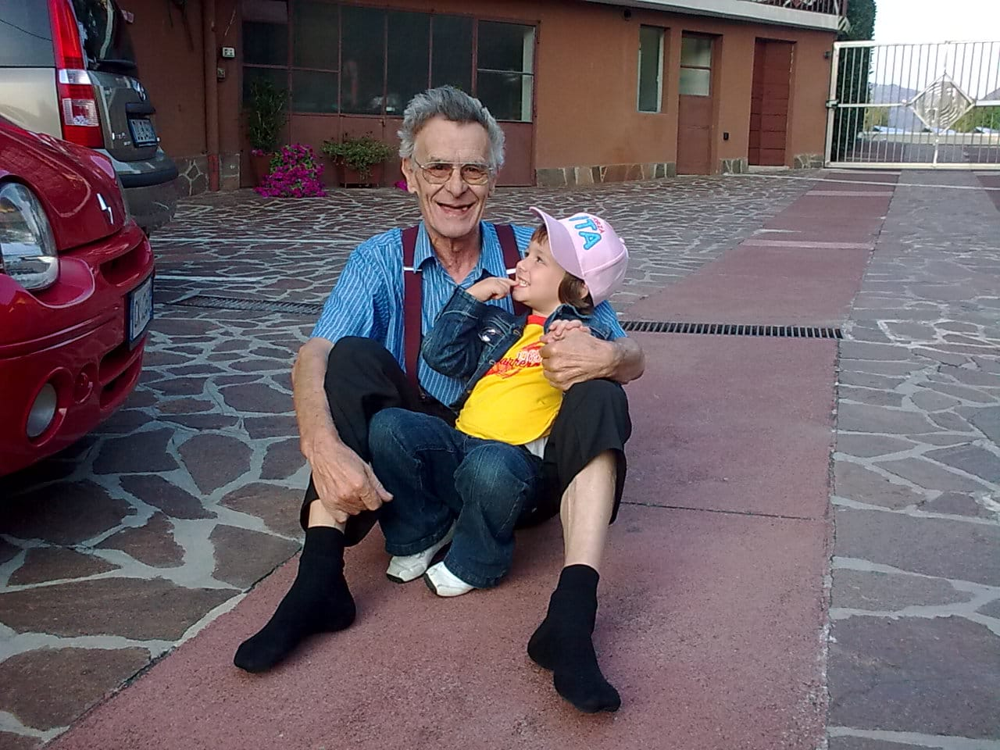
PASSIONI E INTERESSI
VIAGGI ED ESPLORAZIONE
Considero il viaggio come una vera e propria scuola di vita e, ogni volta che se ne presenta l'opportunità, amo mettermi in gioco. Fin da piccola, i miei genitori mi hanno abituata a esplorare il mondo: dalle grandi città ai piccoli borghi nascosti della mia provincia. Per me viaggiare significa sia condividere moments preziosi in compagnia, sia vivere spazi di riflessione in solitaria; è il modo perfetto per staccare dalla quotidianità, scoprire nuove realtà e aprire la mente.
IL MIO RIFUGIO TRA LE PAGINE
Inizialmente i fumetti del topolino e ora i libri mi trasmettono protezione, scoperta e una spinta a lasciarmi andare, a proiettarmi in dinamiche anche fuori dall’ordinario. È per questo che amo immergermi nella lettura. Una particolarità però, che vale per qualunque cosa, le pagine bisogna sentirle, bisogna sfogliarle e non guardarle attraverso uno schermo.
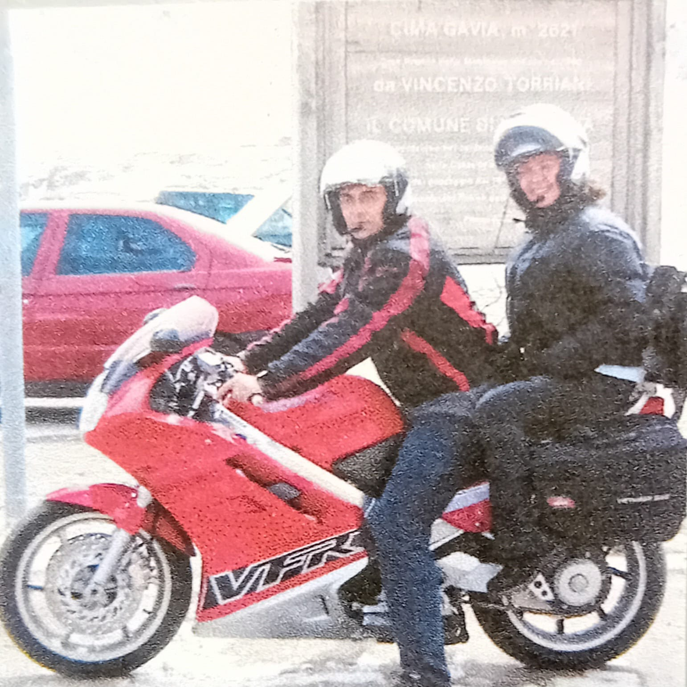
CULTURA DEI MOTORI
Il mio inizio nel mondo delle due e quattro ruote lo devo a mio padre. Fin dall’infanzia mi ha raccontato la storia delle grandi case automobilistiche e motociclistiche, portandomi a mostre, gare di rally e fiere conosciute come il MBE di Verona ed EICMA. La mia è una passione profonda: guardare i motori attraverso uno schermo mi annoia, perché non restituisce la stessa magia, le stesse emozioni. Ho bisogno di viverli dal vivo, di assaporarne l'atmosfera, di ascoltare il loro rombo e respirare l’odore rilasciato dalle vetture. È un fascino a cui non riesco a resistere, non riesco a non distogliere lo sguardo.
ADRENALINA BIANCA
La neve è il mio ambiente: soffro molto il caldo e l'aria pungente sul viso e quella sensazione di freschezza assoluta mi rigenerano. Pratico snowboard ogni volta che mi è possibile, è uno sport fatto di adrenalina pura, ma il bello arriva quando la discesa finisce. Condividere le piste, le avventure e le risate con gli amici rende ogni giornata in montagna unica.
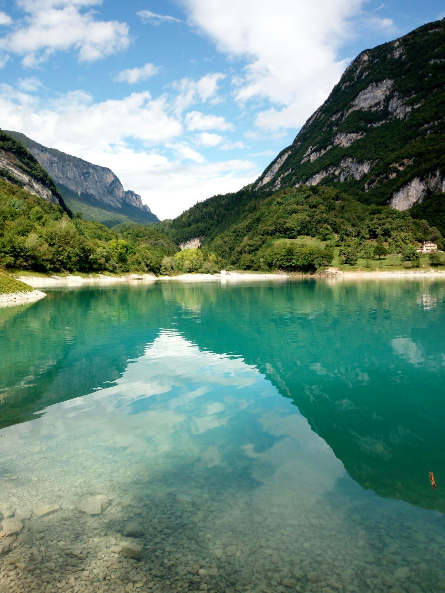

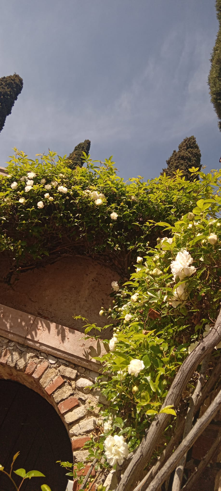
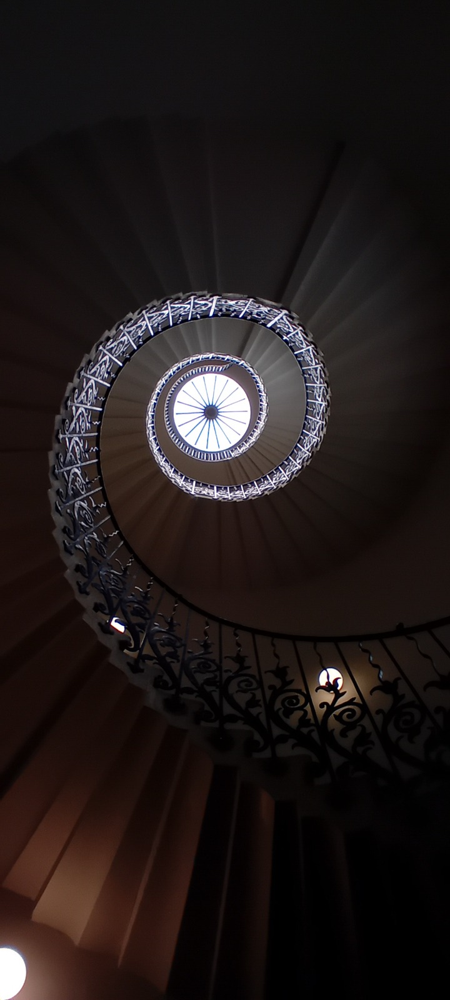
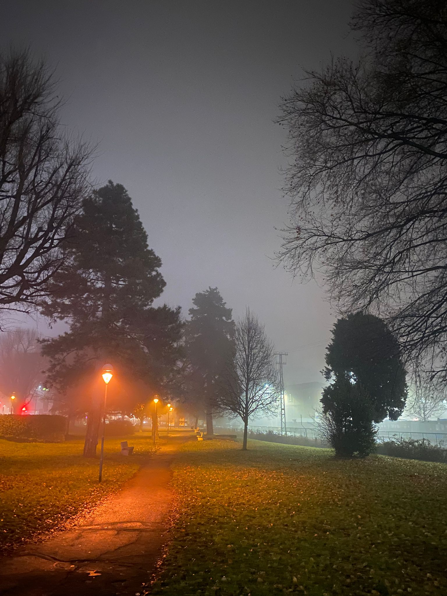
OLTRE L’ORDINARIO
Trovo bella l’idea di catturare l'essenza di un istante e fermare il tempo in un'immagine. Osservare il mondo alla ricerca di soggetti particolari e fuori dal comune o di paesaggi con colori che ricordano il caldo del camino acceso d’inverno è per me un qualcosa di prezioso. Ecco perché tendo solo a fotografare ciò che mi trasmette emozioni.
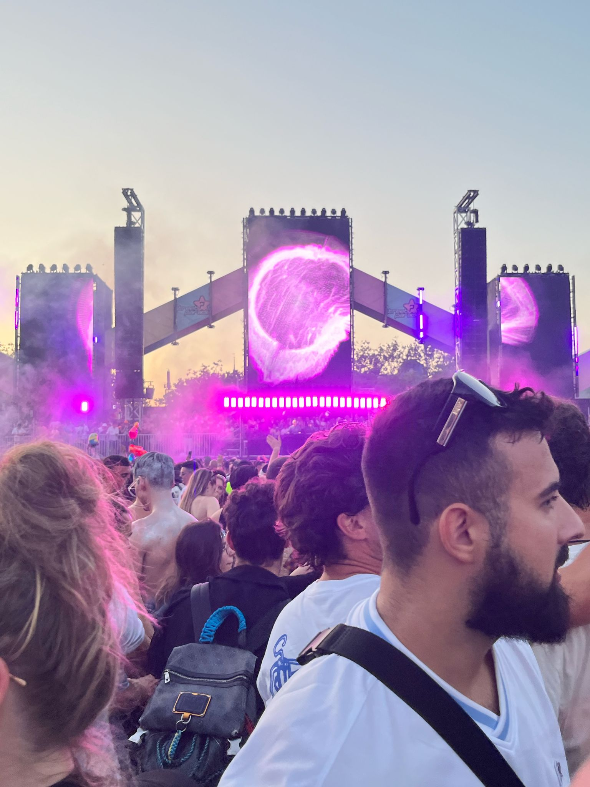
ACCORDI E CONTRASTI
La musica ha il potere di cambiare le mie emozioni e la scelta di cosa ascoltare dipende sempre dal mood della mia giornata. Per questo ascolto davvero di tutto e, quando posso, amo vivere l'energia pura degli eventi dal vivo. Questa passione diventa ancora più vissuta quando mi sento libera dalle inibizioni e mi lascio andare sulle note di una canzone ballando o suonando il mio violino.
GUIDARE
I veicoli mi trasmettono da sempre un senso di libertà, ebrezza e una spinta ad andare oltre i limiti, di mettermi alla prova. È per questo che amo fare lunghi giri sulla mia moto, che cambierò quando ne avrò l’occasione per poter raggiungere tutti i posti lontani che mi immagino. Salire su qualsiasi mezzo abbia un motore regala quel sogno di superamento del limite umano che va oltre l'immaginazione. La cosa più incredibile per me è che tutto questo non è magia: sono fenomeni spiegabili, e proprio per questo sono ancora più affascinanti e apprezzabili.
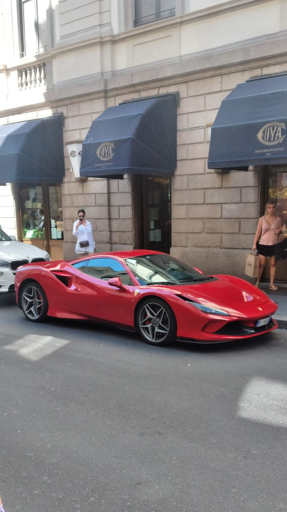

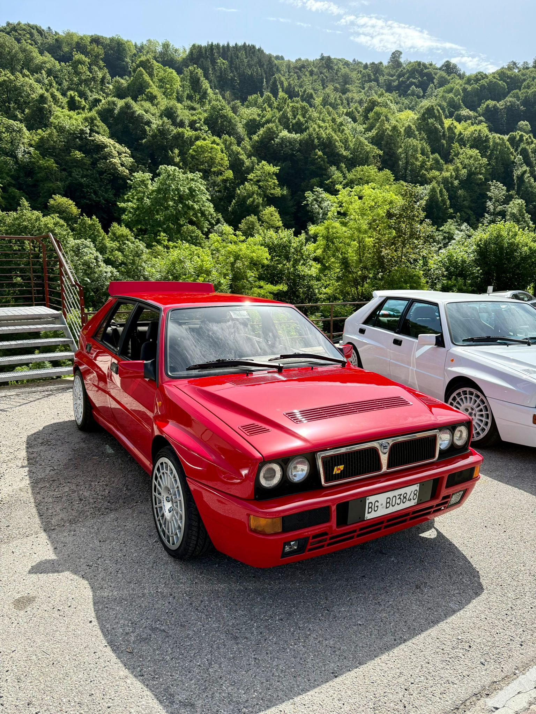
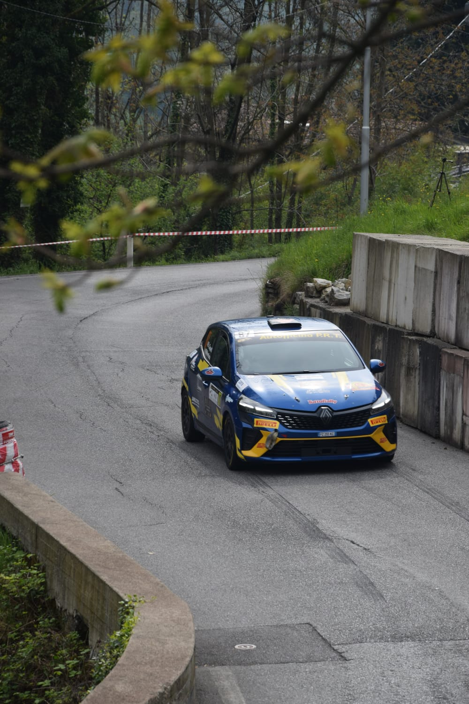
MECCANICA E CASA
Trovo affascinante comprendere gli ingranaggi e l’armonia che muove un motore. Osservare come un macchinario sia stato progettato e costruito è per me un'esperienza coinvolgente. Tuttavia, penso che lo studio teorico non debba mai superare l’emozione pura che si prova nel sentire quel motore accendersi e funzionare. Questa passione per la dinamica e la tecnica, che coltivo fin da piccola, mi fa sentire a casa e rappresenta il mio equilibrio ideale che vorrei poter portare avanti in un futuro.
PROSPETTIVE FUTURE
SOGNO NEL CASSETTO
Il mio obiettivo a lungo termine è far convergere i miei due grandi interessi: la matematica e la dinamica dei motori. Per questo motivo ho presentato la mia candidatura alla facoltà di Ingegneria al Politecnico di Milano, con l'ambizione di entrare a far parte dei progetti studenteschi PMF e Dynamis PRC, eccellenze che gareggiano a livello europeo nella progettazione Formula Student.
La mia massima aspirazione professionale è lavorare nella progettazione e nel testing, studiando la dinamica di modelli innovativi per poi vederli e provarli direttamente. Perché secondo me un buon equilibrio tra doveri e divertimenti è ciò di cui si ha bisogno per vivere la propria vita al meglio.
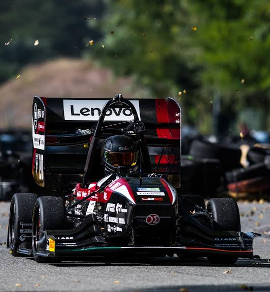

PERCHÉ CANDIDARSI
OLTRE IL CURRICULUM
La candidatura al Ducati Summer Campus rappresenta il punto d'incontro ideale tra il rigore analitico dei sistemi informatici e ingegneristici e la pura passione per il movimento e la dinamica dei fluidi.
Entrare in un ecosistema dove la fisica non è solo teoria ma performance pura su pista permette di accelerare l'apprendimento e di testare soluzioni innovative a stretto contatto con standard industriali di eccellenza mondiale.
ASPETTATIVE
DETERMINAZIONE E RESILIENZA
Essere scelta per questo Campus sarebbe un'opportunità e un’ottima esperienza di vita. Sono consapevole che la selezione per soli 24 posti in tutta Italia rende la competizione altissima, ma questo non mi scoraggia, anzi mi stimola.
Anche se non dovessi essere accettata, non ne farò un dramma a lungo termine: trasformerò questa esperienza in una lezione, imparando a mettermi in gioco ancora di più e a impegnarmi con una grinta ancora maggiore.